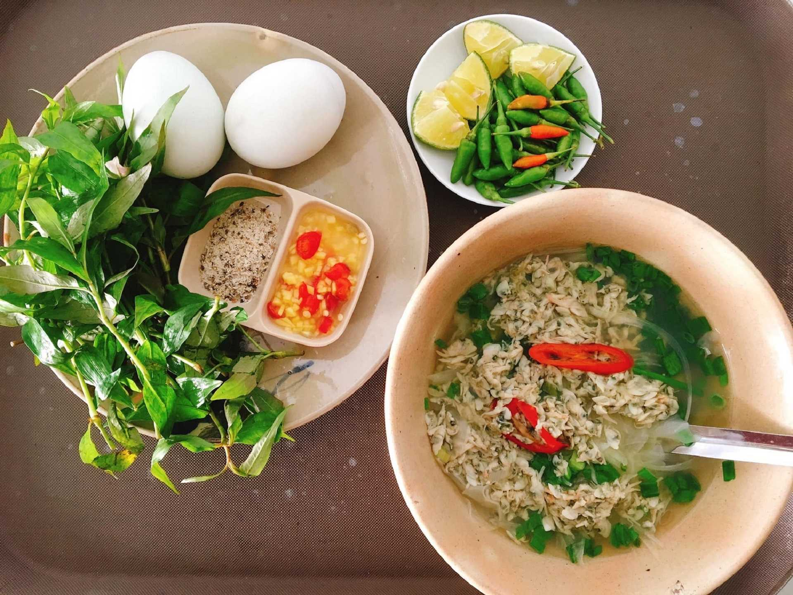

Don - Trứng lộn Bà Hai
Nhiều thực khách khen ngợi hương vị độc đáo của món don và trứng vịt lộn tại quán. Không gian quán sạch sẽ, thoáng mát và phục vụ nhiệt tình. Giá cả hợp lý, phù hợp với chất lượng món ăn.
Nhiều thực khách khen ngợi hương vị độc đáo của món don và trứng vịt lộn tại quán. Không gian quán sạch sẽ, thoáng mát và phục vụ nhiệt tình. Giá cả hợp lý, phù hợp với chất lượng món ăn.